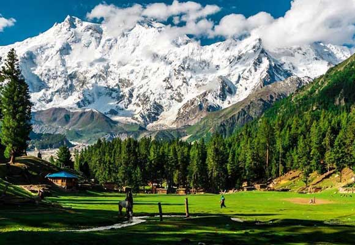
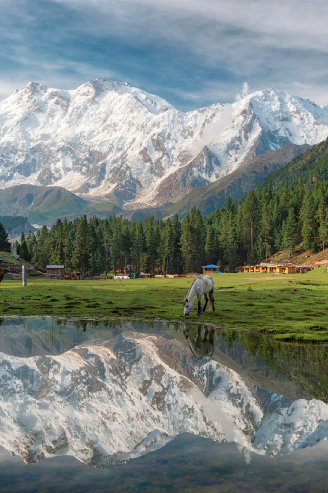

Meadow Escape
Fairy Meadows is the central landscape around which the programme is built.

FAIRY MEADOWS · PAKISTAN
A ten-day mountain journey through Fairy Meadows, Tattu Village, Raikot Bridge and the Nanga Parbat Base Camp experience.
Explore the journey ↓Fairy Meadows turns the journey itself into the destination — a mountain escape shaped by meadows, jeep roads, trekking and the immense presence of Nanga Parbat.
The supplied programme is a ten-day trip built around Fairy Meadows and a focused collection of mountain experiences: Tattu Village, Raikot Bridge, Nanga Parbat Base Camp, a jeep ride and a bonfire.
The source material presents Fairy Meadows as a mountaineering-oriented escape and describes its wider travel experience through dramatic landscapes, outdoor movement and time spent close to the mountains.
The journey is especially suited to travellers who want an active mountain rhythm rather than a conventional city-to-city holiday: the programme combines road access, jeep travel, trekking and a high-altitude landscape experience.
The supplied page contains one internal inconsistency: its destination list is Fairy Meadows / Tattu Village / Raikot Bridge / Nanga Parbat Base Camp, while one overview sentence refers to a “Summer Trip” to Skardu. This redesign preserves the named Fairy Meadows itinerary rather than silently changing the source.
The central mountain destination named in the supplied programme.
A base-camp experience places the journey in the shadow of a major Himalayan peak.
The programme combines jeep travel with trekking for a more active mountain approach.
A simple evening ritual adds a communal finish to days outdoors.
The editorial mosaic uses the supplied Fairy Meadows hero image as a flexible visual base. Replace repeated frames with dedicated photography as the media library grows.

Replace this panel with a muted looping film of the jeep approach, meadow movement, trekking and mountain light.
Four elements that give the supplied itinerary its mountain identity.
Fairy Meadows is the central landscape around which the programme is built.
Nanga Parbat Base Camp adds a dramatic high-mountain objective to the route.
Jeep travel and trekking make movement through the landscape part of the experience.
Bonfire time provides a slower, communal counterpoint to the day outdoors.
A mountain itinerary built around one iconic meadow and the landscapes that lead toward Nanga Parbat.
The supplied source names the following places and experiences to be covered:
The supplied page lists Karachi-to-Islamabad transport separately from the Islamabad-to-Islamabad tour price.
The source says the listed transport fares are based on actual provider prices; any increase is payable by the passenger. It also notes that air tickets are charged at actual prices at booking and that fuel-price fluctuations may adjust costs.
Bring a rucksack, warm trousers, warm jacket, warm hi-neck, rain coat or parka, gloves, woollen socks, cap, sunglasses, water bottle, trekking stick, trekking boots or durable joggers, torch with spare batteries, power bank, charger, moisturiser, lip balm, insect repellent, tissues and basic personal first-aid medicines.
The supplied procedure requires Rs10,000 per head advance. The source says guests may deposit the amount by bank or visit the office to pay cash and receive a receipt, then submit trip name/date, receipt, participant names, CNIC numbers, contact numbers, total seats and joining point by SMS/WhatsApp.
7 days before departure: 50% deduction. 3 days before departure: 75% deduction. Less than 3 days before departure: 100% deduction.
The source headline displays Rs33,000 per person. Its detailed Islamabad-to-Islamabad table lists the following sharing prices and notes that the package excludes two nights of Islamabad stay.
Important: The supplied source contains a pricing discrepancy between the Rs33,000 hero price and the detailed Islamabad-to-Islamabad rates. It also states that the detailed rate excludes two nights of Islamabad stay. Confirm the final current fare and inclusions with the operator before payment.
“The strongest part of this itinerary is the transition from road to mountain: let the jeep ride, the trek and the first wide view from Fairy Meadows feel like part of the arrival, not simply transport between stops.”
A slow-travel reading of the supplied Fairy Meadows programme
Tell us who is travelling and when. Our team can confirm the current package rate, transport availability and the appropriate departure arrangement.